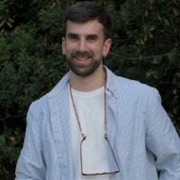

Luca Scofano

I investigate the mechanics of intelligence. Currently, I am a Senior AI Researcher at Translated, designing multimodal foundation models and bridging the gap between deep theoretical research and engineering at scale.
My work spans Multimodal AI, topology, and embodied AI. Previously, I was a Postdoctoral Researcher at Sapienza University and a Visiting Researcher at TU Darmstadt.
Offline, I focus on Trekking, Photography and Art.
Feb 2026
Joined Translated as Senior AI Researcher.
ICLR 25
"Following the Human Thread" accepted as Spotlight (Top 3.1%).
2025
Local Arrangement Chair for ICIAP25.
Feb 2026 — Present
Senior AI Researcher / Translated
Multimodal foundation models, DVPS, and scalable training.
2025 — Jan 2026
Postdoctoral Researcher / Sapienza University
Applying AI Methods to decode neural signals.
2025
AI Researcher (Contractor) / Sapienza & Yocabe srl
Return-rate prediction pipelines.
2024
Visiting Researcher / TU Darmstadt
Embodied AI & GNNs.
2021 — 2025
PhD in Data Science / Sapienza University
Motion forecasting, egocentric perception, topological deep learning.